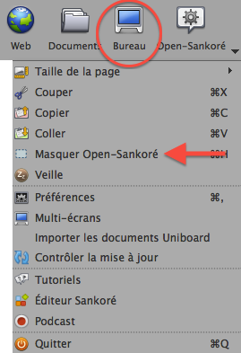

Open-Sankoré ne peut pas s'ouvrir en mode fenêtre. Le logiciel occupera tout la surface de votre écran.
Voici quelques modes qui vous permettent toutefois d'accéder à vos autres ressources :
A. Passer en mode "Bureau"
Le mode "Bureau"
B. Masque Open-Sankoré (menu Open-Sankoré)
